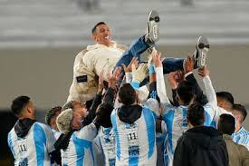

La mejor Receta para un Budín Frances!!
La receta ganadora del premio culinario FlavorAwards, es la receta de este Budín Italiano la cual es realmente innovadora y obtuvo una gran puntuacion superando con creces al resto de Postres!!
Budín Red Velvet Italiano
.jpg)
Esta es una lista de Ingredientes para preparar el Budín italiano:
- Harina 500gr
- Leche de Almendras 1L
- Frutilla, Arandanos y Moras
- Manteca
- 3 Huevos
- 2 Tazas de Azucar
Pasos a Seguir
Prepara el Budín Italiano en pocos pasos!:
- Mezclar la Harina, la Azucar y los 3 Huevos en un Bowl
- Por otro lado Mezclar la leche y los frutos rojos en otro Bowl
- Una vez hechas las mezclas Unificar en un contenedor/Budinera
- Cocinar a Baño Maria durante 1hr y 30 minutos, a 280°C
- Al sacar del Horno desmoldar en el momento y dejar enfriar
Una vez Desmoldado tendras tu famoso y delicioso Budín Italiano!
Homenaje a Di Maria
Ángel Di María tuvo este jueves su merecido homenaje tras haber anunciado su retiro de la Selección Argentina. En la previa al partido ante Chile, por las Eliminatorias Sudamericanas, Fideo recibió al cariño de los hinchas en el estadio Monumental.
Angel Di maria en su Homenaje en el Monumental